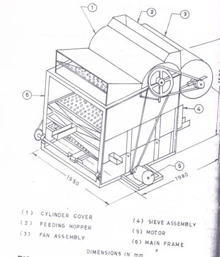
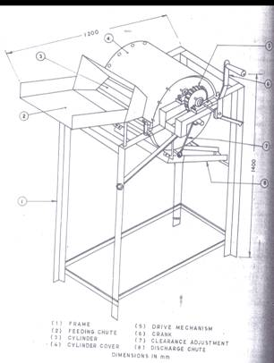

AENG 252 :: Lecture 04 :: SHELLER – MAIZE AND CASTOR SHELLER

Maize sheller
The maize sheller consists of a bevel gear fixed adjacent to the shelling disc, which pulls the cob inside, while a spring loaded tongue which is provided above the bevel gear holds the cob tight against the shelling disc,. Shelling is accomplished with beating and shearing action of the cast iron projections present in the rotating shelling disc. The shelled kernels with dust are passed through an air stream produced by a blower which separates the kernels. The cleaned kernels are collected at the bottom. The capacity of the unit is 500 kg of cob/h and it is operated by an one hp electric motor.
Husker sheller for maize
The machine consists of a hopper, rotor, sieve, blower, auger and an elevator. The removal of sheath and shelling of cob take place in the rotor sieve assembly. The shelled kernels are carried by the auger to one end and then elevated to the desired level for direct collection in bags. The capacity of the unit is 100 quintals per day. It is operated by 7.5 hp electric motor.
Castor sheller cum winnower
The machine consists of a teakwood cylinder and concave, a feed hopper, blower, sieve assembly and 2 hp electric motor. Unthreshed pods are retained on the top of sieve and come out from chute at the end of the sieve. Partially and completely shelled one pass through the top sieve. The middle sieve retains the partially shelled pods and allows the shelled beans to pass through. The partially shelled pods come out from chute at the end of middle sieve. The lighter hulls are blown out by the blast of air form the blower. The shelled bean comes out form the chute at the middle of the bottom perforated sheet. The perforations allow sand particles; weed seed etc., to be sieved out of the threshed castor bean. Capacity of the unit is 250 kg/h.

Fig. Castor Sheller cum winnower
Castor Sheller
The sheller consists of a wooden ribbed cylinder of 320 mm length and 380 mm diameter, concave, cylinder cover, feeding chute discharge cute, drive mechanism and crank. The clearance between the concave and cylinder adjustable depending on the size of bean. Shelling drum is operated by crank through a gear unit which shells the castor pods. Manual clearing is done. The unit is operated by two labours. Capacity of the unit is one quintal per day.

Fig. Castor Sheller
| Download this lecture as PDF here |